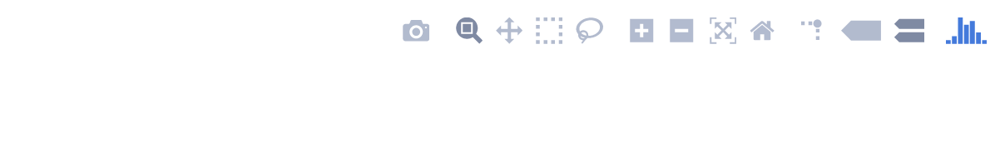
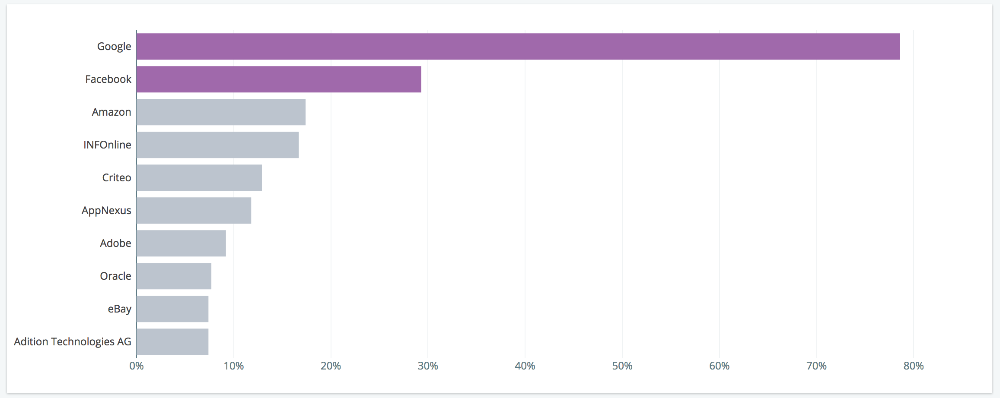
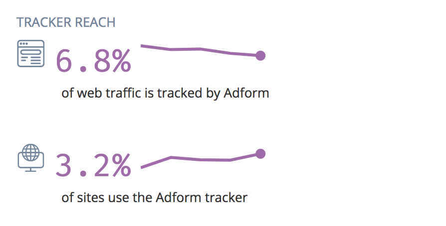
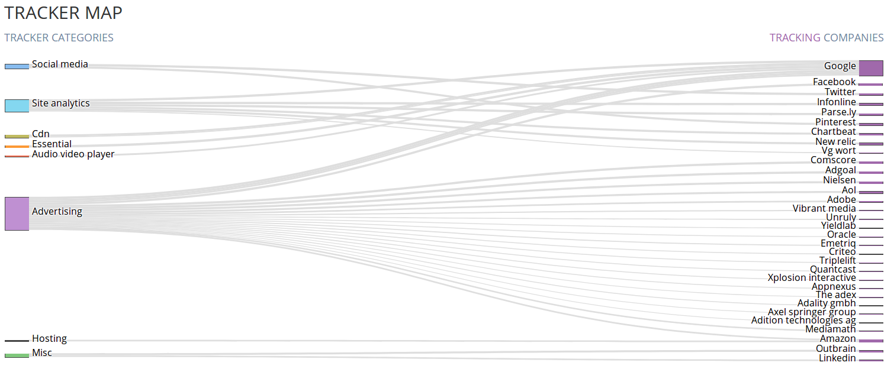
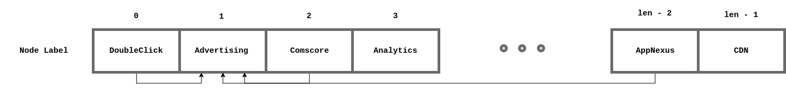

Adding search, data, plots and blog to 1000+ pages of tracker profiles and top domains.
A picture says a 1000 words - or so they say. Interestingly, some recent research suggests that even when we read, our brain actually recognizes words as pictures [1]. With that said, as if one needs to justify this, having plots accompany text and numbers, is typically a good idea, and we did add some plots.
Choosing Plotly, allowed us to keep as much of the codebase as possible in python, and have interactive plots as opposed to images.
The main components needed to plot something in plotly are five: traces,
data, layout, figure and the plotobject, where they're put together.
graph objects
populated with the input data needed. data and layout, and the
respective values defined earlier.A typical function that plots something, has this rough structure:
def some_plot(param_0, param_1 ..., param_n):
# list of traces
data = [trace_0, trace_1, ..., trace_n]
# Dictionary to configure the layout of the plot
layout = {
config_option_0: value (type:: str | int | dict)
config_option_1: ____
config_option_n: ____
}
# creating the fig object
fig = {
data = data,
layout = layout
}
# creating the plot object (see next section for details)
return plotly.offline.plot(fig, other_configurable_params)
We'll discuss details and provide examples on each using real examples of plots we have on this site.
This is where the plot object (referred to earlier) gets created. There are a few options.
from plotly.plotly import plot, iplot # create url to be viewed on plotly's
# website (api key needed). With iplot
# you can also open the with jupyter
# notebooks
from plotly.offline import plot, iplot # the first one creates a file of the
# in an array of file formats, the second
# creates an interactive plot without
# connecting to the plotly server, but
# viewable in a notebook.
We will be using plottly.offline.plot and
choose div as the output type, which is very handy given it is html
that will go into the template where it will be rendered. This enables us to
generate the plots completely offline and just link the minified
plotly.js
in the head of base.html.
One downside to consider, is the 2.8MB size of plotly.js though. For us however,
given the site will be served via CDN, this should be cached after the
first time it loads.
Let's write a function with all options we need, that will be used for all
types of plots shown later in this post. This function is defined in
plotting/utils.py:
def div_output(fig, display_mode_bar=False):
return plotly.offline.plot(
figure_or_data=fig,
output_type='div',
show_link=False,
include_plotlyjs=False,
config={"displayModeBar": display_mode_bar}
)
Note that display_mode_bar is the set of options that shows up on the top
right corner of the plot when rendered by plotly.js, and it looks like this:

Figure 2: Mode bar on top right corner of plotly plots.
include_plotlyjs is set to False to avoid plotly.js being loaded inline
with the div output for every plot. This is not necessary as it is already
linked in base.html.
On main page of this site, you will see this:

Figure 3: Horizontal bar chart on tracking reach of top 10 companies
The code to generate this can be found in plotting/companies.
Let's write a simpler function for a horizontal bar plot to get the idea:
def horizontal_bar_plot(x, y):
'''
x: values
y: names
'''
c_purple = "#A069AB"
c_gray = "#BCC4CE"
trace = go.Bar(
x=x,
y=y,
orientation='h'
marker=dict(
color=[c_purple]*2 + [c_gray]*8
),
)
data = [trace]
layout = go.Layout(
dict(
showlegend=False,
xaxis=dict(
color=CliqzColors["gray_blue"]
)
)
)
fig = dict(data=data, layout=layout)
return div_output(fig)
This chart, as many others, was inspired by Edward Tufte's sparkline [2], drawn without axes or coordinates.

Figure 4: Trend line of tracker reach.
def sparkline(ts, t):
"""
Sparkline for plotting line
Args:
ts: timeseries data
t: x-axis (time)
Returns: hmtl output of an interactive timeseries plot
"""
y = list(map(lambda x: x * 100, ts)) # scaling percentages
trace0 = line(
x=t,
y=y,
color="#A069AB" #purple
)
trace1 = line(
x=[t[-1]],
y=[y[-1]],
color="#A069AB",
mode='markers'
)
layout = go.Layout(
dict(
showlegend=False,
height=100,
width=153,
hoverlabel=dict(
bgcolor="#1A1A25",
bordercolor="#00000000", # transparent
font=dict(
family=CliqzFonts.mono,
size=13,
color="#BFCBD6"
)
),
xaxis=dict(
autorange=True,
showgrid=False,
zeroline=False,
showline=False,
autotick=True,
hoverformat="%b %y",
ticks='',
showticklabels=False
),
yaxis=dict(
# providing some padding for the sparkline
range=[min(y)*0.90, max(y)*1.05 if max(y) != y[-1] else max(y)*1.15],
showgrid=False,
zeroline=False,
showline=False,
autotick=True,
ticks='',
showticklabels=False
)
)
)
data = [trace0, trace1]
fig = dict(data=data, layout=layout)
return div_output(fig)
The code used to plot the sparkline seen in tracker profiles is defined
in plotting/trackers.py.
Sankey diagrams are at visualizing flow volume metrics. Sometimes they are found under the name alluvial diagrams, although they originally are different types of flow diagrams.

Figure 1: Sankey diagram used to represent a tracker map
In this site we use sankey diagrams in website profile pages like bahn.de to map companies and the trackers they operate to the category of the tracker. The thickness of the link is a function of the frequency of of appearance of the tracker per page load in the given domain. So looking at the diagram above, we know that the dominant tracker category is advertising and Google operates the most trackers and has the highest frequency of appearance.
Our Sankey Diagram function in Python looks like this:
from plotting.utils import div_output
def sankey_plot(input_data):
data_trace = dict(
type='sankey',
domain=dict(
x=[0, 1],
y=[0, 1]
),
hoverinfo="none",
orientation="h",
node=dict(
pad=10,
thickness=30,
label=list(map(lambda x: x.replace("_", " ").capitalize(), input_data['node']['label'])),
color=input_data['node']['color']
),
link=dict(
source=input_data['link']['source'],
target=input_data['link']['target'],
value=input_data['link']['value'],
label=input_data['link']['label'],
color=["#dedede" for _ in range(len(input_data['link']['source']))]
)
)
layout = dict(
autosize=True,
font=dict(
size=12
)
)
fig = dict(data=[data_trace], layout=layout)
return div_output(fig)
Having looked at a lot of examples of sankey plots, we noticed a recurrent pattern: they do a great job at explaining the plot aesthetics, but take the structure of input data as given. This is a bit of a problem, because in most examples the input data is a huge json file, and figuring out the structure of such json file can become tedious.
Here is how input_data is structured:
input_data = {
"node":{
"label": [],
"color": []
},
"link": {
"source": [],
"target": [],
"value": [],
"label": [],
"color": []
}
}
As you notice, input_data has two main parts: node and link:
NODE: input_data["node"] is responsible for building nodes. In our example these nodes are either
categories of trackers or companies that operate them. The atributes of each node are two:
label and color. These are both lists of strings. These lists have to have equal length because
the mapping of each label to a color is done based on the item's index in the list.
LINK: input_data["link"] is responsible for linking two nodes together. Each link has
the following attributes: source, target, value, label and color. So here is where the index of
input_data["node"]["label"] becomes very important given the way sankey plots have been implemented in
plotly. The source and target are lists of equal length, where the index is used to link.

Figure 5: Node label ilustration
The elements in source and target are in fact the indexes of the source node and target
nodes in the input_data["node"]["label"]. So if we were to refer to the illustration in the
figure above, to render our sankey diagram we would have:
source = [1, 1, 1, ... ]
target = [0, 2, len-2, ... ]
With that out of the way, the remaining are intuitive: value represents how thick the link should be,
label what name it has and color its color. All the link attributes are lists of equal length, and
the matching is done based on index.
For details, have a look at the actual implementation of the input_data generation
in utils/companies.py.
[1] Adding Words to the Brain's Visual Dictionary
[2] Sparkline - Wikipedia